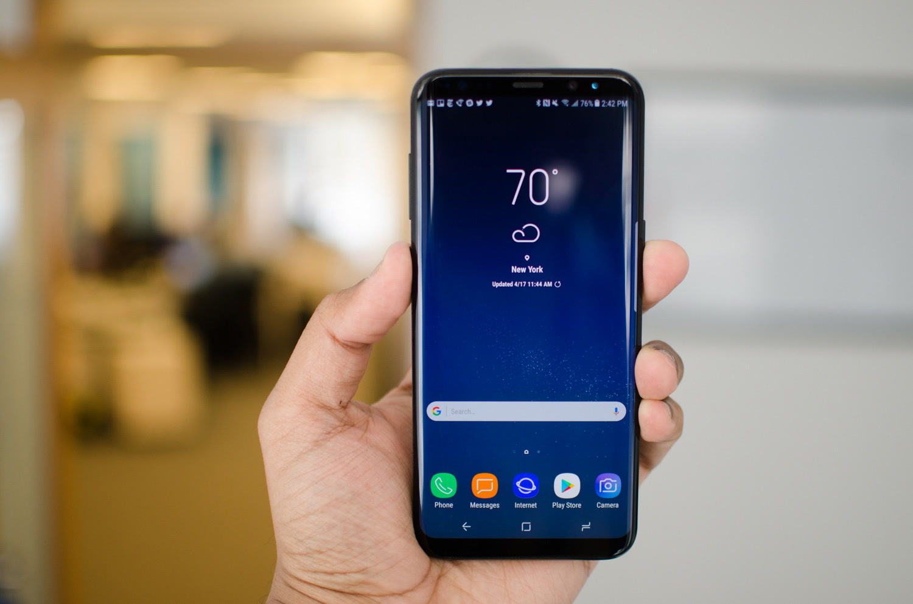

- Computers
- Laptops
- Monitors
- Muizen
- Toetsenborden
- Printers

Beschrijving
Met de Samsung Galaxy S8 en Samsung Galaxy S8 Plus zijn de smartphones van Samsung weer een stap verbeterd. Zo is het scherm een stuk groter geworden, terwijl het toestel in zijn geheel niet veel is gegroeid. Zo bekijk je comfortabel foto's en video's en heb je toch een handzame telefoon. De home button is verdwenen, daarom vind je de vingerafdrukscanner aan de achterkant van de smartphone. De Galaxy S8 en S8 Plus zijn verder voorzien van een 12 megapixel camera, een irisscanner en Bixby, de persoonlijke assistent van Samsung.
- Specificatie 1
- Specificatie 2
- Specificatie 3
- Specificatie 4
- Specificatie 5
- Specificatie 6
- Specificatie 7
- Specificatie 8
- Snelle levering
- Niet goed geld terug!
- Voor 17:00 besteld, morgen in huis!
- Tijdelijk 10% korting op alle producten